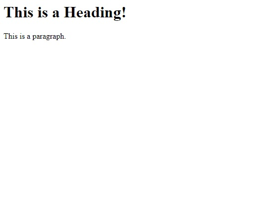

Technical Blog - JS Fundamentals
The difference between HTML and CSS
To explore the difference between HTML and CSS I will use the analogy of a house. HTML can be thought of as the structure or framework of the house. It specifies the makeup of the house, what sections are the hallway, what sections are bedrooms, what section is the kitchen and so on. It also includes the contents of those sections such as a bedroom contains a bed, wardrobe, drawers and maybe a desk.
We can drill down even further, a bed is made up of a matress, pillows and a duvet and so on. You can think of these as 'children' of the parent element the 'bed' which is itself a child element of the bedroom, which itself is a child element of the house.
House Represented as HTML elements
<house>
<kitchen>
<cupboard>
<plate />
<cup />
</cupboard>
<sink />
</kitchen>
<bedroom>
<bed>
<pillow>
<duvet>
</bed>
</bedroom>
</house>
Website Made up of HTML Elements
Just as above, a web-page is made up of elements, and HTML provides the semantic structure of what is what.
<html>
<head>
<meta>
<title>Webpage Title</title>
</head>
<body>
<h1>This is a Heading!</h1>
<p>This is a paragraph.</p>
</body>
</html>
HTML in itself is pretty boring however. This information is read by the browser which then uses default styles to apply to each element, such as how large should a h1 heading be, what is the font-size of a paragraph, what colour should the text be and the default positioning of these elements. Here is what it looks like:
Stunning!
This is where CSS comes in. Back to our house analogy... You can think of CSS as the interior decoration of the house and also the layout. For example CSS would be responsible for the positioning of furniture items in the room, specifying how large each of the rooms should be, the colour of the walls, the brightness of the lights and so on.
CSS uses selectors to select an element of the HTML, or in our house anology select an item like the bed, a room, carpet etc. And then applies declarations to change the appearance of that item. Let's say we want to specify the bed to have a width of 1.2 metres, a height of 2.2 metres, colour of light blue and positioned in the top-left of the bedroom. We would do this as follows:
bed {
width: 1.2m,
height: 2.2m,
color: light-blue,
top: 0,
left: 0
}
But wait a minute, I hear you say... We might have more than one bed in the house, we don't want all beds to necessarily be in the same position, or have the same colour or width. We can add a class name to each of our bed (or HTML elements) to target specific instances of it as shown below.
First in the HTML we would specify the following:
<bed class="lucys-bed">
</bed>
Now we can target that specifc class name in the CSS as follows:
.lucys-bed {
width: 0.6m,
height: 2.2m,
color: pink,
}
Control Flow in JavaScript
What is Control Flow?
Control flow is used to describe the order in which the computer runs or executes the code in your program. In JavaScript this is generally done from top to bottom from the first line to the last, however there are several structures that change control flow such as loops, conditionals and functions.
Conditional Statements
Conditional Statements are used when you need to perform different actions based on different conditions.
The most basic conditional statement is an if statement. For example, in your house the simple task of answering the door when someone rings the doorbell could be expressed as an if statement:
if (doorbellRings) {
answerTheDoor();
}
This is great! However, sometimes we may not want to always open the door! It depends who it is that is there. We need a more complex logic than simply opening the door to everyone. For that we can use a combination of nested if statements as well as if-else statements when we need a second option:
if (doorbellRings) {
personAtDoor = whoIsIt();
if (personAtDoor == 'Jehova's Witness') {
silentlyBackAway();
} else {
answerTheDoor();
}
}
Loops
Loops allow us to create iterable sections in our code. This allows us to repeat a sequence of steps multiple times until there is nothing left to loop over or a certain condition is met.
A simple way to think of a loop is to think of a task you do daily in which you may repeat the steps more than once. For example let us imagine a workout routine at the gym where we have a set exercise (for example, a bicep curl) that we wish to complete for a certain number of "reps" or in programming speak we would call these the "iterations".
We could write some pseudo-code for this routine, where each line is a step as follows:
let rep number equal 0
while rep number is less than 10 do the following:
perform a bicep curl
increase rep number by 1, go back to step (line) 2
In JavaScript this could be written with a while loop as so:
let rep = 0;
while (rep < 10) {
bicepCurl();
rep += 1;
}
Let's examine what is happening here... First of all we declare a variable named "rep" and set it to an initial value of 0. Next we create the whlie loop using the keyword "while" followed by the condition in parentheses. In this case we want the loop to keep executing as long as the value for rep is less than 10. We then use the opening curly brace "{" to specify the beginning of a code block which contains the statements we want to execute during the loop. The first statement is performing the action of the bicep curl itself, which I have modelled here as a function. The next step, which is very important is to increase the value of the looping variable otherwise we will end up in an infinite loop! Finally we close off the loop block with the closing curly brace "}". As an aside, you will notice we begin counting at 0 and not 1, which is common in computer programming.
When the code executes and comes across the while loop, it will first check the condition statement (in the parentheses) - and provided the condition evaluates as true, the body of the loop (inside the curly braces) will execute line by line until it reaches the end (the closing curly brace), then the condition will be checked again and if it still evaluates as true it will repeat the loop.
It could also be written with a for loop as so:
for (let rep = 0; rep < 10; rep++) {
bicepCurl();
}
As you can see this code is more succinct than the while loop. The for loop places the looping variable, the condition statement and the loop variable increment all within the parentheses. The way it works however is exactly the same.
Let's take this analogy a bit further.. What if rather than performing just one set of the exercise we want to do multiple sets? For this we can use nested loops. Let's look at our pseudo-code first:
let set equal 0
while set number is less than 3 do the following:
let rep number equal 0
while rep number is less than 10 do the following:
perform a bicep curl
increase rep number by one, go back to step (line) 4
take a rest
increase set number by 1, go back to step (line) 2
Now as a while loop:
let set = 0;
while (set < 3) {
let rep = 0;
while (rep < 10) {
bicepCurl();
rep += 1;
}
takeRest();
set += 1;
}
And as a for loop:
for (let set = 0; set < 3; set++) {
for(let rep = 0; rep < 10; rep++) {
bicepCurl();
}
takeRest();
}
DOM - Document Object Model
The DOM is a data representation of the objects that comprise the structure and content of a document on the web.
The DOM provides the interface between web pages and programming languages such as JavaScript by representing the structure of a document as a logical tree with each branch of the tree ending in a node and each node containing objects. The DOM is cross-platform and can be used with any programming language.

The HTML DOM defines:
- The HTML elements as objects
- The properties of all HTML elements
- The methods to access all HTML elements
- The events for all HTML elements
The real power of the DOM is that through it we can use JavaScript to change the HTML document's structure by adding new HTML elements or deleting existing elements. We can also change it's style by adding/toggling classes on elements to which CSS rules have been defined for or adding inline style attributes directly to those elements. Finally, we also adjust an HTML's content such as changing the text.
We can also attach event handlers to nodes to be able to trigger functions that respond to user interaction with the page such as page loads, mouse inputs, button clicks and key presses.
Accessing Data from Arrays and Objects
Array Acess
The first thing to know about arrays is that the position of each element is referred to as the index number with 0 being the index of the first element in the array, 1 being the second element and so on.
To access an element of an array we use bracket notation array[i] where i is the index number (position) of the element in the array. For example:
myArray = ["Dev", "Academy", "Is", "Cool"];
console.log(myArray[2]);
// => "Is"
Object Access
The difference between accessing items in an array and items in an object is that objects store name:value pairs which are then accessed using the name rather than an index or position. The named values in objects are known as properties.
Let's look at a simple object representing a person:
const person = {
firstName: "John",
lastName: "Doe",
age: 50,
"eye color": "blue"
}
Some things to note, the property names are actually strings however if it is a single word the quotes may be omitted, like in the case of firstName, lastName and age. However beacause eye color is made up of two words, the string must be wrapped in quotes.
To access properties on an object we can either use dot-notation or bracket notation. However dot-notation will only work if the property name is a single word, otherwise bracket notation is required.
console.log(person.firstName);
// => "John"
console.log(person["lastName"]);
// => Doe
console.log(person.eye color); // won't work
console.log(person["eye color"]);
// => "blue"
Bracket notation is also required to be used when working with variables:
let prop = "age";
console.log(person[prop]);
// => 50
Functions
Functions provide us with a way to structure larger programs and can help reduce repitition. It allows us to break up our code into smaller, more manageable units
Defining a Function
There are multiple ways to define a function. The most basic is a
function definition (also called a
function declaration). It consists of the keyword
function followed by:
- The name of the function
- A list of parameters to the function, enclosed in parentheses and seaparated by commas
-
The statements which define the function enclosed in curly brackets
{...}
The code below is for a simple function that takes a number as an input, and returns the square of that number:
function square(x) {
return x * x;
};
The above function takes a single parameter x which is listed inside the parentheses in the function definition. This parameter behaves like a local variable inside the function body. Now that we have defined the function, we now have to call the function. When we call the function, if the function has parameter(s), we pass in values for those parameters as arguments inside the parentheses.
let result = square(5);
console.log(result);
// => 25
In the above function call we pass in the integer 5 as an argument, the function then squares this number and returns the result which we assign to a variable named 'result'.
We can also create functions using a function expression. In which we assign a function to a variable, this function can be anonymous, it does not have to have a name:
const square = function(x) {
return x * x;
};